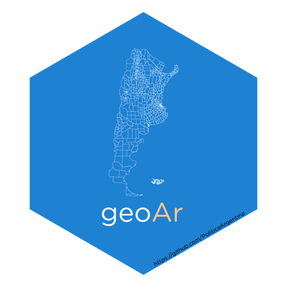

geografía Arrgentina usando R 
geoAr brinda herramientas que facilitan el acceso y el trabajo con datos espaciales de Argentina desde R.
INSTALACIÓN (Install)
Desde CRAN (versión estable)
# Install geoAr in R:
install.packages('geoAr')Versión en desarrollo (Development version)
Desde GitHub
# install.packages('devtools') si no tiene instalado devtools
devtools::install_github("politicaargentina/geoAr")
r-universe
Se puede agregar el repositorio de r-universe como parámetro a la función base install.packages:
# Install geoAr in R:
install.packages('geoAr', repos = c('https://politicaargentina.r-universe.dev')Ejemplo de uso básico (Basic Usage)
library(geoAr)
show_arg_codes() # Preview avialable data
#> # A tibble: 26 x 5
#> id codprov codprov_censo codprov_iso name_iso
#> <chr> <chr> <chr> <chr> <chr>
#> 1 ARGENTINA " " " " AR Argentina
#> 2 CABA "01" "02" AR-C Ciudad Autónoma de Buenos Air~
#> 3 BUENOS AIRES "02" "06" AR-B Buenos Aires
#> 4 CATAMARCA "03" "10" AR-K Catamarca
#> 5 CORDOBA "04" "14" AR-X Córdoba
#> 6 CORRIENTES "05" "18" AR-W Corrientes
#> 7 CHACO "06" "22" AR-H Chaco
#> 8 CHUBUT "07" "26" AR-U Chubut
#> 9 ENTRE RIOS "08" "30" AR-E Entre Ríos
#> 10 FORMOSA "09" "34" AR-P Formosa
#> # i 16 more rows
(tucuman <- get_geo(geo = "TUCUMAN")) # geo id parameter from show_arg_codes() function
#> Simple feature collection with 17 features and 2 fields
#> Geometry type: MULTIPOLYGON
#> Dimension: XY
#> Bounding box: xmin: -66.18101 ymin: -28.01575 xmax: -64.48315 ymax: -26.06037
#> Geodetic CRS: WGS 84
#> # A tibble: 17 x 3
#> codprov_censo coddepto_censo geometry
#> * <chr> <chr> <MULTIPOLYGON [°]>
#> 1 90 007 (((-64.49919 -26.23353, -64.49857 -26.26325, -6~
#> 2 90 014 (((-65.13782 -26.74975, -65.10095 -26.75771, -6~
#> 3 90 021 (((-65.94729 -27.08444, -65.93885 -27.0989, -65~
#> 4 90 028 (((-65.62733 -26.87134, -65.62598 -26.84177, -6~
#> 5 90 035 (((-65.47532 -27.53838, -65.43503 -27.5425, -65~
#> 6 90 042 (((-65.51768 -27.54528, -65.53685 -27.62278, -6~
#> 7 90 049 (((-65.51348 -27.62978, -65.52091 -27.66553, -6~
#> 8 90 056 (((-65.12933 -27.02488, -65.12589 -27.01659, -6~
#> 9 90 063 (((-65.43583 -26.83751, -65.38124 -26.84196, -6~
#> 10 90 070 (((-65.86853 -26.99852, -65.85796 -27.01388, -6~
#> 11 90 077 (((-65.93481 -27.39544, -65.89887 -27.3702, -65~
#> 12 90 084 (((-65.16293 -26.82289, -65.18562 -26.86204, -6~
#> 13 90 091 (((-65.33499 -27.20478, -65.33462 -27.21948, -6~
#> 14 90 098 (((-66.08361 -26.23547, -66.06621 -26.23792, -6~
#> 15 90 105 (((-65.70111 -26.52317, -65.65078 -26.5263, -65~
#> 16 90 112 (((-65.52483 -26.09667, -65.4682 -26.09253, -65~
#> 17 90 119 (((-65.27025 -26.84087, -65.28587 -26.83549, -6~Información Disponible (Available Data)
Geometrías
Polígonos
Las funciones básicas para obtener polígonos de Argentina corresponden a la última información censal disponible (CENSO 2010)
ARGENTINA (niveles PROVINCIA, DEPARTAMENTO y RADIO CENSAL)
24 provincias (niveles DEPARTAMENTO y RADIO CENSAL)
CENSOS históricos
- Se facilita el acceso a la reconstrucción de los polígonos utilizados para los censos desde 1869 hasta 2010. Recuperado del proyecto Base cartográfica de departamentos para los censos nacionales de la República Argentina desde 1869 a 2010 de Gonzalo Rodriguez y Pablo De Grande.
Encuesta Permanente de Hogares (EPH)
- Geometrías (entidades, envolventes y radios censales) correspondientes a la EPH del INDEC.
Puntos (coordenadas)
- Base de Asentamientos Humanos de la República Argentina (BAHRA) http://www.bahra.gob.ar/
Grillas geofacet
Grillas para usar con geofacet para ARGENTINA, 24 provincias y AGLOMERADOS URBANOS (para usar con {eph}
Libro de códigos (país, provincia, departamento) y función para re-codificar grillas según diccionario (ISO, INDEC, INDRA).
georef-ar API
- Interfaz en R para usar la API del Servicio de Normalización de Datos Geográficos, que permite normalizar y codificar los nombres de unidades territoriales de la Argentina (provincias, departamentos, municipios y localidades) y de sus calles, así como ubicar coordenadas dentro de ellas. La versión original de estas funciones fueron desarrolladas en el paquete
georefardesarrollado por Patricio del Boca.
Citation
To cite package ‘geoAr’ in publications use:
_Juan Pablo Ruiz Nicolini, Patricio Del Boca and Juan Gabriel Juara (2023). geoAr: Argentina’s Spatial Data Toolbox. R package version 0.0.1.4.3. https://github.com/PoliticaArgentina/geoAr_
A BibTeX entry for LaTeX users is
@Manual{,
title = {geoAr: Argentina's Spatial Data Toolbox},
author = {Juan Pablo {Ruiz Nicolini} and Patricio {Del Boca} and Juan Gabriel Juara},
year = {2023},
note = {R package version 0.0.1.4.3},
url = {https://github.com/PoliticaArgentina/geoAr},
{geoAr} es parte del universo de paquetes polAr